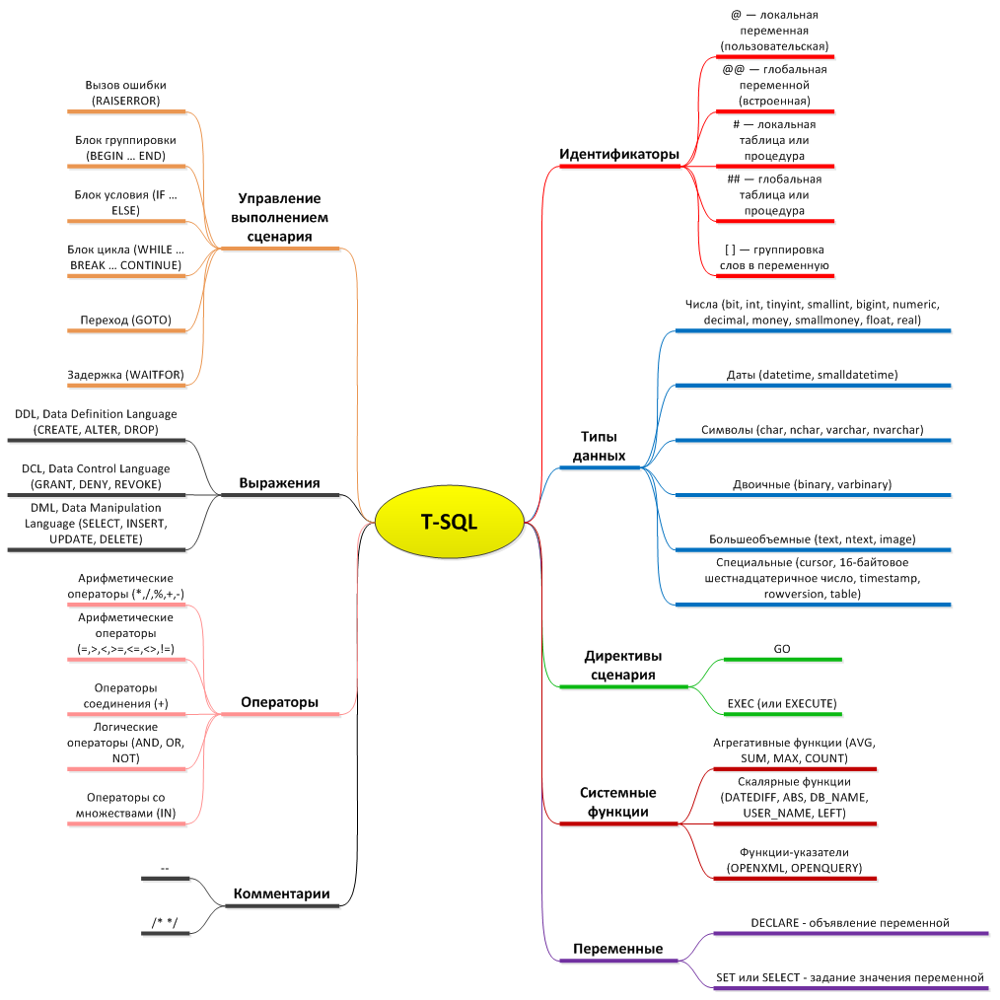

6.Создание запросов, процедур и триггеров. Для квалификации «Администратор баз данных». Создание запросов и процедур на изменение структуры базы данных
Основы T-SQL и примеры — функции (UDF), триггеры, процедуры.

Просто об объектах T-SQL:
- Таблица — хранит данные.
- Вьюха — содержит в себе сложный запрос к одной или нескольким таблицам, вьюхам, табличным функциям. В отличие от таблиц, не хранит в себе данные. Для хранения промежуточных результатов обработки данных можно использовать табличную переменную, локальную временную таблицу нельзя создавать в теле вьюхи. Над табличной переменной можно выполнять действия INSERT, UPDATE, DELETE. Для хранения промежуточных результатов обработки данных можно использовать табличную переменную. Временную таблицу нельзя создавать. Над табличной переменной можно выполнять действия INSERT, UPDATE, DELETE.
- Табличная функция — похожа на вьюху, но основное отличие — принимает входные параметры и в зависимости от этих параметров запускается обработка данных, которая возращает тот или иной набор данных. Нельзя использовать внутри функции операции обработки данных (Insert, Update, Delete) над физическими таблицами. Для хранения промежуточных результатов обработки данных можно использовать табличную переменную. Временную таблицу нельзя создавать. Над табличной переменной можно выполнять действия INSERT, UPDATE, DELETE.
- Скалярная функция — Принимает входные параметры, использует запросы к таблицам, вьюхам, табличным функциям и возращает одно значение (заданного типа). Нельзя использовать внутри функции операции обработки данных (Insert, Update, Delete) над физическими таблицами. Для хранения промежуточных результатов обработки данных можно использовать табличную переменную. Временную таблицу нельзя создавать. Над табличной переменной можно выполнять действия INSERT, UPDATE, DELETE.
- Хранимая процедура — набор действий над данными. В основном требуется для того, чтобы взять данные из таблиц, вьюх, табличных функций, обработать данные и положить их в целевую таблицу. Можно использовать операции обработки данных (Insert, Update, Delete). Для хранения промежуточных результатов в хранимой процедуре используются как временные таблицы (в основном локальные), так и табличные переменные. Эффективней использовать временные таблицы.
Введение основы T-SQL и примеры, которые будут разобраны
Таблицы базы данных, в которых хранятся собственно данные, содержат:
cтроки: каждая строка (или запись) представляет собой совокупность атрибутов (свойств) конкретного экземпляра объекта;
cтолбцы: каждый столбец (поле) представляет собой атрибут или совокупность атрибутов. Поле строки является минимальным элементом таблицы. Каждый столбец в таблице имеет определенное имя, тип данных и размер
Представления (виртуальные таблицы) или Views — создаются для отображения данных из таблиц.
Подобно реальным таблицам, Views содержат именованные столбцы и строки с данными. Для конечных пользователей представление выглядит как таблица, но в действительности оно не содержит данных, а лишь представляет данные, расположенные в одной или нескольких таблицах. Информация, которую видит пользователь через представление, не сохраняется в базе данных как самостоятельный объект
Хранимые процедуры (Stored Procedures) – это группа команд SQL, объединенных в один модуль. Такая группа команд компилируется и выполняется как единое целое
Хранимые процедуры (Stored Procedure) являются программами, хранящимися в базе данных и выполняющими различные действия, обычно с данными из базы данных, хотя процедуры могут и не осуществлять никаких обращений к базе. К хранимым процедурам могут обращаться любые программы, работающие с базой данных, к ним также могут обращаться и другие хранимые процедуры и триггеры. Допустима рекурсия, когда хранимая процедура обращается к самой себе. Хранимые процедуры выполняются на стороне сервера, а не на стороне клиента. Во многих случаях это может резко снизить сетевой трафик при решении различных задач работы с большой по объему базой данных и повысить производительность системы.
Триггеры (Triggers) – специальный класс хранимых процедур, автоматически запускаемых при добавлении, изменении или удалении данных из таблицы.
Триггеры (trigger) так же как и хранимые процедуры, являются программами, выполняющимися на стороне сервера. Однако напрямую обращение к триггерам невозможно. Они автоматически вызываются при наступлении некоторого события базы данных — при добавлении, изменении и или удалении строк конкретной таблицы. Триггеры могут вызываться при соединении с базой данных.
Функции, определенные пользователем (user defined functions, UDF) — это конструкции, содержащие исполняемый код. Функция выполняет какие-либо действия над данными и возвращает некоторое значение/набор данных. К функциям можно обращаться из триггеров, хранимых процедура и из других программных компонентов.
Немного о циклах, условиях в T-SQL
IF … ELSE

Использование ELSE

Временная таблица и табличная переменная
Существует два типа временных таблиц — локальная и глобальная. Отличаются они друг от друга именами, видимостью и доступностью.
Локальная временная таблица имеет префикс в виде одной решетки ‘#local_temp_table’ — видна в текущем соединении пользователя и удаляется, как только пользователь отсоединился от экземпляра (instance) MS SQL Server.
Глобальная временная таблица имеет префикс в виде двух решеток ‘##global_temp_table’ — видна для любого пользователя после ее создания и удаляется, когда все пользователи, ссылающиеся на таблицу, отсоединятся от экземпляра MS SQL Server.
Создание локальной временной таблицы (Local Temp Tables)

Создание глобальной временной таблицы (Global Temp Tables)

Создание табличной переменной (Table Variables)

Переменные
SQL Server поддерживает два типа переменных: локальные и глобальные. Локальные переменные существуют только в пределах сеанса, во время которого они были созданы. Глобальные используются для получения информации о сервере в целом.
Локальные переменные
Локальные переменные служат для хранения временной информации. Локальные переменные объявляются командой DECLARE и существуют лишь на время выполнения пакета. После завершения пакета вы уже не сможете обратиться к ним. Значения переменных задаются командой SELECT или SET. Если значение присваивается одной переменной, эти команды эквивалентны. Команда SELECT может присвоить значения сразу нескольким переменным. В следующем примере команда DECLARE объявляет две переменные, одна из которых задается командой SELECT, а другая — командой SET. Затем происходит чтение и вывод значения обеих переменных:

Вы можете присваивать значения нескольким переменным в одной команде SELECT и объявлять несколько переменных в одной команде DECLARE. Начиная с SQL Server 2008, можно присваивать значение переменной прямо в команде DECLARE.
А также вы можете использовать математические операции типа +=, -= и подобные, которые прибавляют, вычитают некое значение от переменной, которой потом и присваивается вычисленный результат.
Глобальные переменные
Глобальные переменные используются сервером для отслеживания информации уровня сервера или базы данных, относящейся к конкретному сеансу. Для глобальных переменных невозможно явное присваивание или объявление. Некоторые глобальные переменные:

Пример вывода значения локальной или глобальной переменной:

Объявление и инициализация переменной
Для того, чтобы использовать переменную, ее сначала нужно объявить, а затем можно присвоить ей значение.

Использование TRY … CATCH — обработка ошибок
Конструкция TRY…CATCH позволяет перехватывать все ошибки исполнения кода. За блоком TRY сразу же должен следовать блок CATCH. Если ошибки в блоке TRY не возникают, то после выполнения последней инструкции в блоке TRY управление передается инструкции, расположенной сразу после инструкции END CATCH. Если же в коде, заключенном в блоке TRY, происходит ошибка, управление передается первой инструкции в соответствующем блоке CATCH. Если инструкция END CATCH является последней инструкцией хранимой процедуры или триггера, управление передается обратно инструкции, вызвавшей эту хранимую процедуру или триггер.
Синтаксис:

Функции по работе с ошибками:
- ERROR_NUMBER() — возвращает номер ошибки вне зависимости от числа запусков и места запуска в пределах блока CATCH.
- ERROR_SEVERITY() — При вызове в блоке CATCH возвращает серьезность сообщения об ошибке, вызвавшего запуск блока CATCH. Возвращает значение NULL в случае вызова вне блока CATCH.
- ERROR_STATE() — При вызове в блоке CATCH возвращает номер состояния сообщения об ошибке, вызвавшей запуск блока CATCH.
- ERROR_PROCEDURE() — Возвращает имя хранимой процедуры или триггера, в которых произошла ошибка, вызвавшая запуск блока CATCH конструкции TRY…CATCH.
- ERROR_LINE() — Возвращает номер строки, в которой возникла ошибка, приведшая к активации блока CATCH конструкции TRY…CATCH.
- ERROR_MESSAGE() — При вызове в блоке CATCH возвращает полный текст сообщения об ошибке, запустившей блок CATCH. Текст содержит значения подставляемых параметров, таких как длина, имена объектов или время.
Пример:

Использование цикла WHILE
Инструкция WHILE повторяет инструкцию или блок инструкций до тех пор, пока указанное условие выполняется.

Триггеры
Триггеры – это предварительно определенное действие или последовательность действий, автоматически осуществляемых при выполнении операций обновления, добавления или удаления данных.
Исключительно важно в этом определении слово «автоматически». Ни пользователь, ни приложение не могут активизировать триггер, он выполняется автоматически, когда пользователь или приложение выполняют с базой данных определенные действия.
Триггер – это специальный вид хранимой процедуры. Триггеры обеспечивают проверку любых изменений на корректность, прежде чем эти изменения будут приняты.
Каждый триггер привязывается к конкретной таблице. Все производимые им модификации данных рассматриваются как одна транзакция. В случае обнаружения ошибки или нарушения целостности данных происходит откат этой транзакции. Тем самым внесение изменений запрещается. Отменяются также все изменения, уже сделанные триггером.
Создать триггер может только владелец базы данных. Это ограничение позволяет избежать случайного изменения структуры таблиц, способов связи с ними других объектов и т.п.
Компоненты триггера
1.Ограничения, для реализации которых создается триггер.
2.Событие, которое будет характеризовать возникновение ситуации, требующей проверки ограничений. Триггерные события чаще всего связаны с изменением состояния базы данных и состоят из вставки, удаления и обновления строк в таблице. События могут учитываться и дополнительные условия (например, добавление записи только с отрицательным значением).
3.Предусмотренное действие осуществляется за счет выполнения процедуры или последовательности процедур, с помощью которых реализуется логика, требуемая для реализации ограничений.
Триггер выполняется неявно в каждом случае возникновения триггерного события. Приведение его в действие называют запуском триггера. С помощью триггеров достигаются следующие цели:
- проверка корректности введенных данных и выполнение сложных ограничений целостности данных, которые трудно, если вообще возможно, поддерживать с помощью ограничений целостности, установленных для таблицы;
- выдача предупреждений, напоминающих о необходимости выполнения некоторых действий при обновлении таблицы, реализованном определенным образом.
Типы триггеров
Существует три типа триггеров:
1.Insert – определяет действия, которые будут выполняться после добавления новой записи в таблицу.
2.Update – определяет действия, которые будут выполняться после изменения записи таблицы.
3.Delete – определяет действия, которые будут выполняться после удаления записи из таблиц.
Часто в СУБД определяется большее число событий, с которыми можно связать триггеры. Например, до вставки, после вставки, до изменения, после изменения и т.д.
Структура триггера

Примеры триггеров